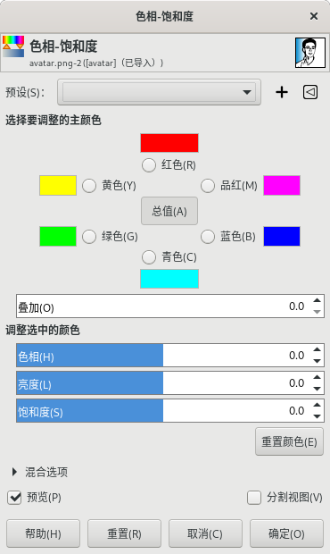

颜色→色相-饱和度
此工具没有快捷键。
此工具可以在所选区域或活动图层上根据多个颜色的权重来调整色相、饱和度和亮度水平。

颜色→色相-饱和度
预设
此选项是通用参数，详细说明请参考图层→透明⇒对话框通用参数。
选择要调整的主颜色
您可以在六种颜色中选择要修改的颜色：三种原色(红、绿、蓝)和三种互补色(青、品红、黄)。它们的相对位置与色环一致。
选择好主颜色后，当下面的色相{hue}值增加时，主颜色的色相会沿色环逆时针变化；值减少时，色相会沿色环顺时针变化。
如果您点击六个颜色中间的“总值” 按钮，则所有的六个颜色会同时关联变化。
GIMP的标准是将红色设置为0(色环上的0°位置)。
注意，这里的六个颜色指的是颜色范围，不是具体的单一颜色通道。
参数调整过程中，六个色板会显示色相{Hue}的变化；如果勾选了预览选项，在图像中就能够直接看到变化效果。
调整选中的颜色
色相{Hue}：通过滑块在色环中选择一个色相Hue(-180°，180°)。
亮度{Lightness}：滑块可以修改亮度( -100，100) 。
提示
这里的亮度调整，需要和颜色→色阶和颜色→曲线工具的亮度调整功能做一下区分。
例如，如果您用色相-饱和度命令来调整黄色的亮度，结果是所有的黄色像素的亮度都会被改变；而用曲线或色阶工具来调整黄色的亮度，只会改变暗调、高光或中间调像素的亮度，而不是整体改变。
饱和度：可以通过滑块来设置饱和度(-100，100)。
重置颜色：此按钮会把所选颜色的色相、亮度和饱和度的修改重置为初始值。
混合选项/预览/分割视图
这三项是通用参数，详细说明请参考图层→透明⇒对话框通用参数。